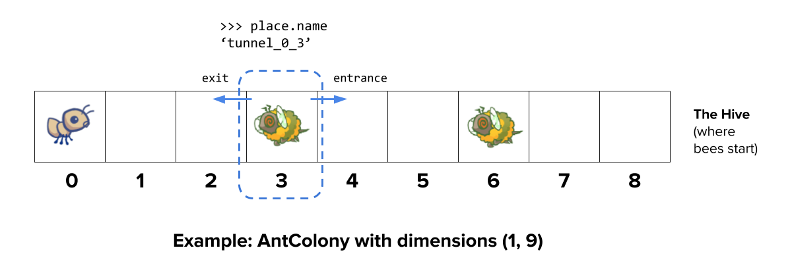
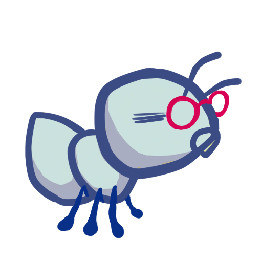
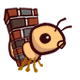
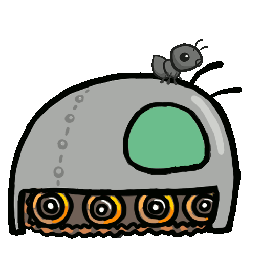
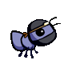

Project 2: Ants Vs. SomeBees
Due at 11:59:59 pm on 04/24/2024.

The bees are coming!
Create a better soldier
With inherit-ants.
Introduction
Important submission note: For full credit,
- Submit with Phase 1 and 2 complete by Wednesday, April 17 (worth 4 pts).
- Submit with all phases complete by Wednesday, April 24. You can get 2 EC points by submitting the entire project by Monday, April 22.
Try to attempt the problems in order, as some later problems will depend on earlier problems in their implementation and therefore also when running
oktests.The entire project can be completed with a partner. Consider using Visual Studio Code Live Share to synchronously work on code with your partner.
In this project, you will create a tower defense game called Ants Vs. SomeBees. As the ant queen, you populate your colony with the bravest ants you can muster. Your ants must protect their queen from the evil bees that invade your territory. Irritate the bees enough by throwing leaves at them, and they will be vanquished. Fail to pester the airborne intruders adequately, and your queen will succumb to the bees' wrath. This game is inspired by PopCap Games' Plants Vs. Zombies.
This project uses an object-oriented programming paradigm, focusing on material from Chapter 2.5 of Composing Programs. The project also involves understanding, extending, and testing a large program.
Download starter files
The ants.zip archive contains several files, but all of your
changes will be made to ants.py.
ants.py: The game logic of Ants Vs. SomeBeesants_gui.py: The original GUI for Ants Vs. SomeBeesgui.py:A new GUI for Ants Vs. SomeBees.graphics.py: Utilities for displaying simple two-dimensional animationsutils.py: Some functions to facilitate the game interfaceucb.py: Utility functions for CS 88state.py: Abstraction for gamestate for gui.pyassets: A directory of images and files used bygui.pyimg: A directory of images used byants_gui.pyok: The autograderants.ok: Theokconfiguration filetests: A directory of tests used byok
You can obtain all the files needed for this project by downloading this zip archive.
Logistics
This is a 16 day project. You may work with one other partner. You should not share your code with students who are not your partner or copy from anyone else's solutions.
In the end, you will submit one project for both partners. The project is worth 60 points.
The project is worth 60 points. 54 points are assigned for correctness, 2 points for composition, 4 points for submitting Phase 1 and 2 by the checkpoint date
For composition we're looking at the style of your code. Please read this to see what we're looking for.
Additionally, there are some extra credit point opportunities. You can get 2 EC point for submitting the entire project by Monday, April 22 and 2 EC points for submitting the extra credit problem.
Important: In order to receive all of the extra credit points for Ants, your implementation of the entire project, including the EC problem, must be submitted by the early submission deadline.
You will turn in the following files:
ants.py
You do not need to modify or turn in any other files to complete the project. To submit the project, submit to Gradescope using the links below.
For the functions that we ask you to complete, there may be some initial code that we provide. If you would rather not use that code, feel free to delete it and start from scratch. You may also add new function definitions as you see fit.
However, please do not modify any other functions. Doing so may result in your code failing our autograder tests. Also, please do not change any function signatures (names, argument order, or number of arguments).
Submission
In the end, you will submit one project for both partners.
Make sure you have added your partner on Gradescope when submitting the project.
The assignment is due on Wednesday, 04/24, at 11:59pm. We will have a mid-project checkpoint due Wednesday, 04/17 at 11:59pm.
- Phases 1 and 2 are due on Wednesday, 04/17, at 11:59pm. To submit, attach the required files to Gradescope under "Ants Checkpoint".
- The entire project (including Phases 1 and 2) is due on Wednesday, 04/24, at 11:59pm. We will only grade your last submission before the deadline. If you submit the entire project 2 days early (by Monday 04/22, at 11:59 pm), you will receive 2 points of EC.
The submission links are below:
Adding Group Members: After you submit, you must add your partner to your Gradescope submission. Review Gradescope's instructions on adding partners.
Test Unlocking, Debugging & Getting Unstuck
Throughout this project, you should be testing the correctness of your code. It is good practice to test often, so that it is easy to isolate any problems.
We have provided an autograder called ok to help you with
testing your code and tracking your progress.
ok, it will back up your work and progress on our
servers.
The primary purpose of ok is to test your implementations, but there
is a catch. At first, the test cases are locked. To unlock tests, you must run
an ok command which will be specified for each problem below.
The command will start an interactive prompt that looks like:
===================================================================== Assignment: Ants Vs. SomeBees OK, version ... ===================================================================== ~~~~~~~~~~~~~~~~~~~~~~~~~~~~~~~~~~~~~~~~~~~~~~~~~~~~~~~~~~~~~~~~~~~~~ Unlocking tests At each "? ", type what you would expect the output to be. Type exit() to quit --------------------------------------------------------------------- Question 0 > Suite 1 > Case 1 (cases remaining: 1) >>> Code here ?
At the ?, you can type what you expect the output to be.
If you are correct, then this test case will be available the next time
you run the autograder.
The idea is to understand conceptually what your program should do first, before you start writing any code.
Once you have unlocked some tests and written some code, you can check
the correctness of your program using the tests that you have
unlocked using a different ok command (also provided in each problem below).
The tests folder is used to store autograder tests, so make sure
not to modify it. You may lose all your unlocking progress if you
do. If you need to get a fresh copy, you can download the
zip archive and copy it over, but you
will need to start unlocking from scratch.
Debugging Tools
If you are ever stuck on a problem, you should add print statements to your code to help debug.
Use print("DEBUG:", variable) to see the value of variable and still have your tests pass.
print("DEBUG:", variable)
When you use a print statement like this, the ok autograder will ignore this output allowing your test to pass.
Interactive Debugging
We can run Python using the interactive interpreter by executing python3 -i. This gives us a console which allows us to inspect and execute code. ok includes similar functionality!
python3 ok -q 01 -iThis will run our ok tests, then whenever a test fails drop us in the interpreter, for that question. We can then input the datat uses in doctests and call our function.
The Game
A game of Ants Vs. SomeBees consists of a series of turns. In each turn, new
bees may enter the ant colony. Then, new ants are placed to defend their colony.
Finally, all insects (ants, then bees) take individual actions. Bees either try
to move toward the end of the tunnel or sting ants in their way. Ants perform a
different action depending on their type, such as collecting more food or
throwing leaves at the bees. The game ends either when a bee reaches the end of
the tunnel (you lose), the bees destroy the QueenAnt if it exists (you lose),
or the entire bee fleet has been vanquished (you win).

Core concepts
The Colony. This is where the game takes place. The colony consists of
several Places that are chained together to form a tunnel where bees can
travel through. The colony also has some quantity of food which can be expended
in order to place an ant in a tunnel.
Places. A place links to another place to form a tunnel. The player can put a single ant into each place. However, there can be many bees in a single place.
The Hive. This is the place where bees originate. Bees exit the beehive to enter the ant colony.
Ants. Players place an ant into the colony by selecting from the
available ant types at the top of the screen.
Each type of ant takes a different action and requires a different
amount of colony food to place. The two most basic ant types are the HarvesterAnt,
which adds one food to the colony during each turn, and the ThrowerAnt, which
throws a leaf at a bee each turn. You will be implementing many more!
Bees. In this game, bees are the antagonistic forces that the player must defend the ant colony from. Each turn, a bee either advances to the next place in the tunnel if no ant is in its way, or it stings the ant in its way. Bees win when at least one bee reaches the end of a tunnel.
Core classes
The concepts described above each have a corresponding class that encapsulates the logic for that concept. Here is a summary of the main classes involved in this game:
GameState: Represents the colony and some state information about the game, including how much food is available, how much time has elapsed, where theAntHomeBaseis, and all thePlaces in the game.Place: Represents a single place that holds insects. At most oneAntcan be in a single place, but there can be manyBees in a single place.Placeobjects have anexitto the left and anentranceto the right, which are also places. Bees travel through a tunnel by moving to aPlace'sexit.Hive: Represents the place whereBees start out (on the right of the tunnel).AntHomeBase: Represents the placeAnts are defending (on the left of the tunnel). If Bees get here, they win :(Insect: A superclass forAntandBee. All insects havehealthattribute, representing their remaining health, and aplaceattribute, representing thePlacewhere they are currently located. Each turn, every activeInsectin the game performs itsaction.Ant: Represents ants. EachAntsubclass has special attributes or a specialactionthat distinguish it from otherAnttypes. For example, aHarvesterAntgets food for the colony and aThrowerAntattacksBees. Each ant type also has afood_costattribute that indicates how much it costs to deploy one unit of that type of ant.Bee: Represents bees. Each turn, a bee either moves to theexitof its currentPlaceif thePlaceis notblockedby an ant, or stings the ant occupying its samePlace.
Game Layout
Below is a visualization of a GameState. As you work through the unlocking tests and problems, we recommend drawing out similar diagrams to help your understanding.
Object map
To help visualize how all the classes fit together, we've also created an object map for you to reference as you work, which you can find here:
Playing the game
The game can be run in two modes: as a text-based game or using a graphical user interface (GUI). The game logic is the same in either case, but the GUI enforces a turn time limit that makes playing the game more exciting. The text-based interface is provided for debugging and development.
The files are separated according to these two modes. ants.py knows
nothing of graphics or turn time limits.
To start a text-based game, run
python3 ants_text.pyTo start a graphical game, run
python3 gui.pyWhen you start the graphical version, a new browser window should appear. In the
starter implementation, you have unlimited food and your ants can only throw leaves
at bees in their current Place. Before you complete Problem 2, the GUI may crash since it doesn't have a full conception of what a Place is yet! Try playing the game anyway! You'll need to
place a lot of ThrowerAnts (the second type) in order to keep the bees from
reaching your queen.
The game has several options that you will use throughout the project,
which you can view with python3 ants_text.py --help.
usage: ants_text.py [-h] [-d DIFFICULTY] [-w] [--food FOOD]
Play Ants vs. SomeBees
optional arguments:
-h, --help show this help message and exit
-d DIFFICULTY sets difficulty of game (test/easy/normal/hard/extra-hard)
-w, --water loads a full layout with water
--food FOOD number of food to start with when testingGetting Started Videos
These videos may provide some helpful direction for tackling the coding problems on the project. Note that these videos start providing help at Q4. You can watch the videos provided here.
To see these videos, you should be logged into your berkeley.edu email.
Phase 1: Basic gameplay
Important submission note: For full credit, submit with Phase 1 and 2 complete by Wednesday, April 17 (worth 4 pts).
In the first phase you will complete the implementation that will allow for
basic gameplay with the two basic Ants: the HarvesterAnt and the
ThrowerAnt.
Problem 0 (0 pt)
Answer the following questions with your partner after you have read the
entire ants.py file.
To submit your answers, run:
python3 ok -q 00 -uIf you get stuck while answering these questions, you can try reading through ants.py
again, consult the core concepts/classes sections above, or ask a question in
the Question 0 thread on EdStem.
- What is the significance of an Insect's
healthattribute? Does this value change? If so, how? - Which of the following is a class attribute of the
Insectclass? - Is the
healthattribute of theAntclass an instance attribute or a class attribute? Why? - Is the
damageattribute of anAntsubclass (such asThrowerAnt) an instance attribute or class attribute? Why? - Which class do both
AntandBeeinherit from? - What do instances of
Antand instances ofBeehave in common? - How many insects can be in a single
Placeat any given time (before Problem 8)? - What does a
Beedo during one of its turns? - When is the game lost?
Remember to run:
python3 ok -q 00 -uProblem 1 (3 pt)
Before writing any code, read the instructions and test your understanding of the problem:
python3 ok -q 01 -uPart A: Currently, there is no cost
for placing any type of Ant, and so there is no challenge to the
game. The base class Ant has a food_cost of
zero. Override this class attribute for HarvesterAnt and ThrowerAnt
according to the "Food Cost" column in the table below.
| Class | Food Cost | Initial Health |
 HarvesterAnt |
2 | 1 |
 ThrowerAnt |
3 | 1 |
Part B: Now that placing an Ant costs food, we need to be able to gather more food!
To fix this issue, implement the HarvesterAnt class. A HarvesterAnt is a
type of Ant that adds one food to the gamestate.food total as its action.
After writing code, test your implementation:
python3 ok -q 01Try playing the game by running python3 gui.py. Once you have placed a
HarvesterAnt, you should accumulate food each turn. You can also place
ThrowerAnts, but you'll see that they can only attack bees that are in their
Place, making it a little difficult to win.
Problem 2 (3 pt)
Before writing any code, read the instructions and test your understanding of the problem:
python3 ok -q 02 -uIn this problem, you'll complete Place.__init__ by adding code that tracks entrances. Right
now, a Place keeps track only of its exit. We would like a Place to keep
track of its entrance as well. A Place needs to track only one entrance.
Tracking entrances will be useful when an Ant needs to see what Bees are in
front of it in the tunnel.
However, simply passing an entrance to a Place constructor will be
problematic; we would need to have both the exit and the entrance before
creating a Place! (It's a chicken or the
egg
problem.) To get around this problem, we will keep track of entrances in the
following way instead. Place.__init__ should use this logic:
- A newly created
Placealways starts with itsentranceasNone. - If the
Placehas anexit, then theexit'sentranceis set to thatPlace.
Hint: Remember that when the
__init__method is called, the first parameter,self, is bound to the newly created object
Hint: Try drawing out two
Places next to each other if things get confusing. In the GUI, a place'sentranceis to its right while theexitis to its left.
Hint: Remember that
Placesare not stored in a list, so you can't index into anything to access them. This means that you can't do something likecolony[index + 1]to access an adjacentPlace. How can you move from one place to another?
After writing code, test your implementation:
python3 ok -q 02Problem 3 (3 pt)
Before writing any code, read the instructions and test your understanding of the problem:
python3 ok -q 03 -uIn order for a ThrowerAnt to throw a leaf, it must know which bee to hit.
The provided implementation of the nearest_bee method in the ThrowerAnt
class only allows them to hit bees in the same Place. Your job is to fix it
so that a ThrowerAnt will throw_at the nearest bee in front of it that is not still in the Hive.
This includes bees that are in the same Place as a ThrowerAnt
Hint: All
Places have anis_hiveattribute which isTruewhen that place is theHive.
Change nearest_bee so that it returns a random Bee from the nearest place that
contains bees. Your implementation should follow this logic:
- Start from the current
Placeof theThrowerAnt. - For each place, return a random bee if there is any, and if not,
inspect the place in front of it (stored as the current place's
entrance). - If there is no bee to attack, return
None.
Hint: The
random_beefunction provided inants.pyreturns a random bee from a list of bees orNoneif the list is empty.
Hint: As a reminder, if there are no bees present at a
Place, then thebeesattribute of thatPlaceinstance will be an empty list.
Hint: Having trouble visualizing the test cases? Try drawing them out on paper! The sample diagram provided in Game Layout shows the first test case for this problem.
After writing code, test your implementation:
python3 ok -q 03After implementing nearest_bee, a ThrowerAnt should be able to throw_at a
Bee in front of it that is not still in the Hive. Make sure that your ants
do the right thing! To start a game with ten food (for easy testing):
python3 gui.py --food 10Phase 2: Ants!
Important submission note: For full credit,
- Submit with Phase 1 and 2 complete by Wednesday, April 17 (worth 4 pts).
Now that you've implemented basic gameplay with two types of Ants, let's
add some flavor to the ways ants can attack bees. In this phase, you'll be
implementing several different Ants with different attack strategies.
After you implement each Ant subclass in this section, you'll need to set its
is_implemented class attribute to True so that that type of ant will show up in the
GUI. Feel free to try out the game with each new ant to test the functionality!
With your Phase 2 ants, try python3 gui.py -d easy to play against a
full swarm of bees in a multi-tunnel layout and try -d normal, -d hard, or
-d extra-hard if you want a real challenge! If the bees are too numerous to
vanquish, you might need to create some new ants.
Problem 4 (5 pt)
Before writing any code, read the instructions and test your understanding of the problem:
python3 ok -q 04 -uA ThrowerAnt is a powerful threat to the bees, but it has a high food cost.
In this problem, you'll implement two subclasses of ThrowerAnt that are less
costly but have constraints on the distance they can throw:
- The
LongThrowercan onlythrow_ataBeethat is found after following at least 5entrancetransitions. It cannot hitBees that are in the samePlaceas it or the first 4Places in front of it. If there are twoBees, one too close to theLongThrowerand the other within its range, theLongThrowershould only throw at the fartherBee, which is within its range, instead of trying to hit the closerBee. - The
ShortThrowercan onlythrow_ataBeethat is found after following at most 3entrancetransitions. It cannot throw at any bees further than 3Places in front of it.
Neither of these specialized throwers can throw_at a Bee that is exactly 4
Places away.
| Class | Food Cost | Initial Health |
 ShortThrower |
2 | 1 |
 LongThrower |
2 | 1 |
To implement these new throwing ants, your ShortThrower and LongThrower classes
should inherit the nearest_bee method from the base ThrowerAnt class.
The logic of choosing which bee a thrower ant will attack is
the same, except the ShortThrower and LongThrower ants have a maximum and
minimum range, respectively.
To do this, modify the nearest_bee method to reference min_range and max_range attributes,
and only return a bee if it is within range.
Make sure to give these min_range and max_range attributes appropriate
values in the ThrowerAnt class so that the behavior of ThrowerAnt is
unchanged. Then, implement the subclasses LongThrower and ShortThrower
with appropriately constrained ranges.
You should not need to repeat any code between ThrowerAnt,
ShortThrower, and LongThrower.
Hint:
float('inf')returns an infinite positive value represented as a float that can be compared with other numbers.
Hint: You can chain inequalities in Python: e.g.
2 < x < 6will check ifxis between 2 and 6. Also,min_rangeandmax_rangeshould mark an inclusive range.
Important: Make sure your class attributes are called
max_rangeandmin_rangeThe tests directly reference these attribute names, and will error if you use another name for these attributes.
Don't forget to set the is_implemented class attribute of LongThrower and
ShortThrower to True.
After writing code, test your implementation (rerun the tests for q 03 to make sure they still work):
python3 ok -q 03
python3 ok -q 04Problem 5 (7 pt)
Before writing any code, read the instructions and test your understanding of the problem:
python3 ok -q 05 -uImplement the FireAnt, which does damage when it receives damage. Specifically,
if it is damaged by amount health units, it does a damage of
amount to all bees in its place (this is called reflected damage).
If it dies, it does an additional amount of damage, as specified by its damage attribute,
which has a default value of 3 as defined in the FireAnt class.
To implement this, override FireAnt's reduce_health method.
Your overriden method should call the reduce_health method inherited from
the superclass (Ant) to reduce the current FireAnt instance's health.
Calling the inherited reduce_health method on a FireAnt instance reduces
the insect's health by the given amount and removes the insect from its
place if its health reaches zero or lower.
Hint: Do not call
self.reduce_health, or you'll end up stuck in a recursive loop. (Can you see why?)
However, your method needs to also include the reflective damage logic:
- Determine the reflective damage amount:
start with the
amountinflicted on the ant, and then adddamageif the ant's health has dropped to 0. - For each bee in the place, damage them with the total amount by
calling the appropriate
reduce_healthmethod for each bee.
Important: The
FireAntmust do its damage before being removed from itsplace, so pay careful attention to the order of your logic inreduce_health.
| Class | Food Cost | Initial Health |
 FireAnt |
5 | 3 |
Hint: Damaging a bee may cause it to be removed from its place. If you iterate over a list, but change the contents of that list at the same time, you may not visit all the elements. This can be prevented by making a copy of the list. You can either use a list slice, or use the built-in
listfunction.>>> lst = [1,2,3,4] >>> lst[:] [1, 2, 3, 4] >>> list(lst) [1, 2, 3, 4] >>> lst[:] is not lst and list(lst) is not lst True
Once you've finished implementing the FireAnt, give it a class attribute
is_implemented with the value True.
Note: Even though you are overriding the superclass's
reduce_healthfunction (Ant.reduce_health), you can still use this method in your implementation by calling it. Note this is not recursion. (Why not?)
After writing code, test your implementation:
python3 ok -q 05You can also test your program by playing a game or two! A FireAnt should
destroy all co-located Bees when it is stung. To start a game with ten food
(for easy testing):
python3 gui.py --food 10You can check to ensure that you have completed all Phase 1 and Phase 2 problems by running:
python3 ok --scoreMake sure to submit by the checkpoint deadline Wednesday, April 17 by submitting on Gradescope. If you worked with a partner don't forget to add them!
Congratulations! You have finished Phase 1 and Phase 2 of this project!
Phase 3: More Ants!
Important submission note: For full credit,
- Submit with Phase 1 and 2 complete by Wednesday, April 17 (worth 4 pts).
- Submit with all phases complete by Wednesday, April 24.
Problem 6 (3 pt)
Before writing any code, read the instructions and test your understanding of the problem:
python3 ok -q 06 -uWe are going to add some protection to our glorious home base by implementing
the WallAnt, an ant that does nothing each turn. A WallAnt is
useful because it has a large health value.
| Class | Food Cost | Initial Health |
 WallAnt |
4 | 4 |
Unlike with previous ants, we have not provided you with a class header.
Implement the WallAnt class from scratch. Give it a class attribute name
with the value 'Wall' (so that the graphics work) and a class attribute
is_implemented with the value True (so that you can use it in a game).
Hint: To start, take a look at how the previous problems' ants were implemented!
After writing code, test your implementation:
python3 ok -q 06Problem 7 (7 pt)
Implement the HungryAnt, which will select a random Bee from its place
and eat it whole. After eating a Bee, a HungryAnt must spend 3 turns chewing before
eating again. If there is no bee available to eat, HungryAnt will do nothing.
Before writing any code, read the instructions and test your understanding of the problem:
python3 ok -q 07 -uWe have not provided you with a class header.
Implement the HungryAnt class from scratch. Give it a class attribute name
with the value 'Hungry' (so that the graphics work) and a class attribute
is_implemented with the value True (so that you can use it in a game).
Hint: When a
Beeis eaten, it should lose all its health. Is there an existing function we can call on aBeethat can reduce its health to 0?
| Class | Food Cost | Initial Health |
 HungryAnt |
4 | 1 |
Give HungryAnt a chew_duration class attribute that stores the number of
turns that it will take a HungryAnt to chew (set to 3). Also, give each
HungryAnt an instance attribute chew_countdown that counts the number of turns
it has left to chew (initialized to 0, since it hasn't eaten anything at the
beginning. You can also think of chew_countdown as the number of turns until a
HungryAnt can eat another Bee).
Implement the action method of the HungryAnt: First, check if it is chewing; if
so, decrement its chew_countdown by 1. Otherwise, eat a random Bee in its
place by reducing the Bee's health to 0. Make sure to set the chew_countdown
when a Bee is eaten!
Hint: Other than the
actionmethod, make sure you implement the__init__method too so theHungryAntstarts off with the appropriate amount ofhealth!
After writing code, test your implementation:
python3 ok -q 07We now have some great offensive troops to help vanquish the bees, but let's make sure we're also keeping our defensive efforts up. In this phase you will implement ants that have special defensive capabilities such as increased health and the ability to protect other ants.
Problem 8 (7 pt)
Before writing any code, read the instructions and test your understanding of the problem:
python3 ok -q 08 -uRight now, our ants are quite frail. We'd like to provide a way to help them
last longer against the onslaught of the bees. Enter the BodyguardAnt.
| Class | Food Cost | Initial Health |
 BodyguardAnt |
4 | 2 |
A BodyguardAnt differs from a normal ant because it is a ContainerAnt; it can
contain another ant and protect it, all in one Place. When a Bee stings the
ant in a Place where one ant contains another, only the container is
damaged. The ant inside the container can still perform its original action.
If the container perishes, the contained ant still remains in the place (and
can then be damaged).
Each ContainerAnt has an instance attribute ant_contained that stores the ant it
contains. This ant, ant_contained, initially starts off as None to indicate that there is no ant being
stored yet. Implement the store_ant method so that it sets the ContainerAnt's
ant_contained instance attribute to the passed in ant argument. Also implement the
ContainerAnt's action method to perform its ant_contained's action if it is currently
containing an ant.
In addition, you will need to make the following modifications throughout your program so that a container and its contained ant can both occupy a place at the same time (a maximum of two ants per place), but only if exactly one is a container:
There is an
Ant.can_containmethod, but it always returnsFalse. Override the methodContainerAnt.can_containso that it takes an antotheras an argument and returnsTrueif:- This
ContainerAntdoes not already contain another ant. - The other ant is not a container.
- This
Modify
Ant.add_toto allow a container and a non-container ant to occupy the same place according to the following rules:- If the ant originally occupying a place can contain the ant being added, then both ants occupy the place and the original ant contains the ant being added.
- If the ant being added can contain the ant originally in the space, then both ants occupy the place and the (container) ant being added contains the original ant.
- If neither
Antcan contain the other, raise the sameAssertionErroras before (the one already present in the starter code). - Important: If there are two ants in a specific
Place, theantattribute of thePlaceinstance should refer to the container ant, and the container ant should contain the non-container ant.
- Add a
BodyguardAnt.__init__that sets the initial amount of health for the ant.
Hint: You may find the
is_containerattribute that eachAnthas useful for checking if a specificAntis a container. You should also take advantage of thecan_containmethod you wrote and avoid repeating code.
The constructor of
ContainerAnt.__init__is implemented as follows:def __init__(self, *args, **kwargs): super().__init__(*args, **kwargs) self.ant_contained = None
argsis bound to all positional arguments (which are all arguments passed without keywords), andkwargsis bound to all the keyword arguments. This ensures that both sets of arguments are passed to the Ant constructor.Effectively, this means the constructor is exactly the same as its parent class's constructor (
Ant.__init__) but here we also setself.ant_contained = None.
Note: Here we will expand on the syntax used above if you are interested. We would like to write a function that accepts an arbitrary number of arguments, and then calls another function using exactly those arguments. Here's how it works.
Instead of listing formal parameters for a function, you can write args, which represents all of the arguments that get passed into the function. We can then call another function with these same arguments by passing these args into this other function. For example:
def printed(f): ... def print_and_return(*args): ... result = f(*args) ... print('Result:', result) ... return result ... return print_and_return >>> printed_pow = printed(pow) >>> printed_pow(2, 8) Result: 256 256 >>> printed_abs = printed(abs) >>> printed_abs(-10) Result: 10 10Here, we can pass any number of arguments into
print_and_returnvia the*argssyntax. We can also use*argsinside ourprint_and_returnfunction to make another function call with the same arguments.
Once you've finished implementing the BodyguardAnt,
give it a class attribute is_implemented with the value True.
After writing code, test your implementation:
python3 ok -q 08Problem 9 (3 pt)
Before writing any code, read the instructions and test your understanding of the problem:
python3 ok -q 09 -uThe BodyguardAnt provides great defense, but they say the best defense is a
good offense. The TankAnt is a container ant that protects an ant in its place
and also deals 1 damage to all bees in its place each turn.
| Class | Food Cost | Initial Health |
 TankAnt |
6 | 2 |
We have not provided you with a class header.
Implement the TankAnt class from scratch. Give it a class attribute name
with the value 'Tank' (so that the graphics work) and a class attribute
is_implemented with the value True (so that you can use it in a game).
You should not need to modify any code outside of the TankAnt class. If you
find yourself needing to make changes elsewhere, look for a way to write your
code for the previous question such that it applies not just to BodyguardAnt
and TankAnt objects, but to ContainerAnt's in general.
Hint: The only methods you need to override from
TankAnt's parent class are__init__andaction.
Hint: Like with
FireAnt, it is possible that damaging a bee will cause it to be removed from its place.
After writing code, test your implementation:
python3 ok -q 09Phase 4: Water and Might
Important submission note: For full credit,
- Submit with all phases complete by Wednesday, April 24.
You will get an extra credit point for submitting the entire project by Monday, April 22.
In the final phase, you're going to add one last kick to the game by introducing a new type of place and new ants that are able to occupy this place. One of these ants is the most important ant of them all: the queen of the colony!
Problem 10 (3 pt)
Before writing any code, read the instructions and test your understanding of the problem:
python3 ok -q 10 -uLet's add water to the colony! Currently there are only two types of places, the
Hive and a basic Place. To make things more interesting, we're going to
create a new type of Place called Water.
Only an insect that is waterproof can be placed in Water. In order
to determine whether an Insect is waterproof, add a new class attribute to the
Insect class named is_waterproof that is set to False. Since bees can fly,
set their is_waterproof attribute to True, overriding the inherited value.
Now, implement the add_insect method for Water. First, add the insect to
the place regardless of whether it is waterproof. Then, if the insect is not
waterproof, reduce the insect's health to 0. Do not repeat code from elsewhere
in the program. Instead, use methods that have already been defined.
After writing code, test your implementation:
python3 ok -q 10Once you've finished this problem, play a game that includes water. To access
the wet_layout, which includes water, add the --water option (or -w for
short) when you start the game.
python3 gui.py --waterProblem 11 (3 pt)
Before writing any code, read the instructions and test your understanding of the problem:
python3 ok -q 11 -uCurrently there are no ants that can be placed on Water. Implement the
ScubaThrower, which is a subclass of ThrowerAnt that is more costly and
waterproof, but otherwise identical to its base class. A ScubaThrower should
not lose its health when placed in Water.
| Class | Food Cost | Initial Health |
 ScubaThrower |
6 | 1 |
We have not provided you with a class header. Implement the ScubaThrower
class from scratch. Give it a class attribute name with the value 'Scuba'
(so that the graphics work) and remember to set the class attribute
is_implemented with the value True (so that you can use it in a game).
After writing code, test your implementation:
python3 ok -q 11Problem 12 (7 pt)
Before writing any code, read the instructions and test your understanding of the problem:
python3 ok -q 12 -uFinally, implement the QueenAnt. The queen is a waterproof ScubaThrower
that inspires her fellow ants through her bravery.
In addition to the standard ScubaThrower action, the QueenAnt doubles the
damage of all the ants behind her each time she performs an action. Once an
ant's damage has been doubled, it is not doubled again for subsequent turns.
Note: The reflected damage of a
FireAntshould not be doubled, only the extra damage it deals when its health is reduced to 0.
| Class | Food Cost | Initial Health |
 QueenAnt |
7 | 1 |
However, with great power comes great responsibility.
The QueenAnt is governed by three special rules:
- If the queen ever has its health reduced to 0, the ants lose.
You will need to override
Ant.reduce_healthinQueenAntand callants_lose()in that case in order to signal to the simulator that the game is over. (The ants also still lose if any bee reaches the end of a tunnel.) - There can be only one queen. After the first queen is constructed, any attempt at
constructing a second queen should result in a
DuplicateQueensException. To keep track of whether a queen has already been created, you can add an instance variable to theGamestateclass and use it in the__init__ofQueenAnt. - The queen cannot be removed. Attempts to remove the queen
should have no effect (but should not cause an error). You will need to
override
Ant.remove_frominQueenAntto enforce this condition.
Hint: You can find each
Placein a tunnel behind theQueenAntby starting at the ant'splace.exitand then repeatedly following itsexit. Theexitof aPlaceat the end of a tunnel isNone.
Hint: To avoid doubling an ant's damage twice, mark the ants that have been doubled in some way, in a way that persists across calls to
QueenAnt.action.
Hint: When doubling the ants' damage, keep in mind that there can be more than one ant in a
Place, such as if one ant is guarding another.
Hint: Feel free to add new methods to the
QueenAntclass! Also, make sure to look at thedoublemethod inAnt.
After writing code, test your implementation:
python3 ok -q 12Extra Credit (2 pt)
Before writing any code, read the instructions and test your understanding of the problem:
python3 ok -q EC -uImplement two final thrower ants that do zero damage, but instead apply a
temporary "status" on the action method of a Bee instance that they
throw_at. This "status" lasts for a certain number
of turns, after which it ceases to take effect.
We will be implementing two new ants that inherit from ThrowerAnt.
SlowThrowerthrows sticky syrup at a bee, slowing it for 3 turns. When a bee is slowed, it can only move on turns whengamestate.timeis even, and can do nothing otherwise. If a bee is hit by syrup while it is already slowed, it is slowed for an additional 3 turns.ScaryThrowerintimidates a nearby bee, causing it to back away instead of advancing. (If the bee is already right next to the Hive and cannot go back further, it should not move. To check if a bee is next to the Hive, you might find theis_hiveinstance attribute ofPlaces useful). Bees remain scared until they have tried to back away twice. Bees cannot try to back away if they are slowed andgamestate.timeis odd. Once a bee has been scared once, it can't be scared ever again.
| Class | Food Cost | Initial Health |
 SlowThrower |
4 | 1 |
 ScaryThrower |
6 | 1 |
In order to complete the implementations of these two ants, you will
need to set their class attributes appropriately and implement the slow and scare methods
on Bee, which apply their respective statuses on a particular bee. You may also have to edit some
other methods of Bee.
You can run some provided tests, but they are not exhaustive:
python3 ok -q ECMake sure to test your code! Your code should be able to apply multiple statuses on a target; each new status applies to the current (possibly previously affected) action method of the bee.
Optional Problems
Note: Optional problems will not receive any extra credit but they're a great way to get more practice and test your understanding!
Optional Problem 1
Before writing any code, read the instructions and test your understanding of the problem:
python3 ok -q optional1 -uImplement the NinjaAnt, which damages all Bees that pass by, but can never
be stung.
| Class | Food Cost | Initial Health |
 NinjaAnt |
5 | 1 |
A NinjaAnt does not block the path of a Bee that flies by. To implement
this behavior, first modify the Ant class to include a new class attribute
blocks_path that is set to True, then override the value of blocks_path to
False in the NinjaAnt class.
Second, modify the Bee's method blocked to return False if either
there is no Ant in the Bee's place or if there is an Ant, but
its blocks_path attribute is False. Now Bees will just fly past
NinjaAnts.
Finally, we want to make the NinjaAnt damage all Bees that fly past.
Implement the action method in NinjaAnt to reduce the health of all Bees
in the same place as the NinjaAnt by its damage attribute. Similar to
the FireAnt, you must iterate over a potentially changing list of bees.
Hint: Having trouble visualizing the test cases? Try drawing them out on paper! See the example in Game Layout for help.
After writing code, test your implementation:
python3 ok -q optional1For a challenge, try to win a game using only HarvesterAnt
and NinjaAnt.
Optional Problem 2
We've been developing this ant for a long time in secret. It's so dangerous
that we had to lock it in the super hidden CS88 underground vault, but we
finally think it is ready to go out on the field. In this problem, you'll be
implementing the final ant — LaserAnt, a ThrowerAnt with a twist.
Note: There are no unlocking tests for this question.
| Class | Food Cost | Initial Health |
 LaserAnt |
10 | 1 |
The LaserAnt shoots out a powerful laser, damaging all that dare
to stand in its path. Both Bees and Ants, of all types, are at
risk of being damaged by LaserAnt. When a LaserAnt takes its action,
it will damage all Insects in its place (excluding itself, but including its
container if it has one) and the Places in front of it, excluding the Hive.
If that were it, LaserAnt would be too powerful for us to contain.
The LaserAnt has a base damage of 2. But, LaserAnt's laser comes with
some quirks. The laser is weakened by 0.25 each place it travels away from
LaserAnt's place. Additionally, LaserAnt has limited battery.
Each time LaserAnt actually damages an Insect its
laser's total damage goes down by 0.0625 (1/16).
If LaserAnt's damage becomes negative due to these restrictions,
it simply does 0 damage instead.
The exact order in which things are damaged within a turn is unspecified.
In order to complete the implementation of this ultimate ant, read
through the LaserAnt class, set the class attributes appropriately,
and implement the following two functions:
insects_in_frontis an instance method, called by theactionmethod, that returns a dictionary where each key is anInsectand each corresponding value is the distance (in places) that thatInsectis away fromLaserAnt. The dictionary should include allInsectson the same place or in front of theLaserAnt, excludingLaserAntitself.calculate_damageis an instance method that takes indistance, the distance that an insect is away from theLaserAntinstance. It returns the damage that theLaserAntinstance should afflict based on:- The
distanceaway from theLaserAntinstance that anInsectis. - The number of
Insectsthat thisLaserAnthas damaged, stored in theinsects_shotinstance attribute.
In addition to implementing the methods above, you may need to modify, add,
or use class or instance attributes in the LaserAnt class as needed.
You can run the provided test, but it is not exhaustive:
python3 ok -q optional2Make sure to test your code!
Project Submission
Now that you're all done you can submit to Gradescope! Remember if you worked with a partner to add them on Gradescope.
You are now done with the project! If you haven't yet, you should try playing the game!
python3 gui.py [-h] [-d DIFFICULTY] [-w] [--food FOOD]Acknowledgments: Tom Magrino and Eric Tzeng developed this project with John DeNero. Jessica Wan contributed the original artwork. Joy Jeng and Mark Miyashita invented the queen ant. Many others have contributed to the project as well!
The new concept artwork was drawn by Alana Tran, Andrew Huang, Emilee Chen, Jessie Salas, Jingyi Li, Katherine Xu, Meena Vempaty, Michelle Chang, and Ryan Davis.
Submission
When you are done, submit your file to Gradescope. You only need to upload the following files:
ants.py
IMPORTANT: If you are working with a partner, only one person should submit to Gradescope, and then add the second person to the submission on Gradescope. See this article if you're unsure how to do this. You must add your partner to your Gradescope submission every time you resubmit.